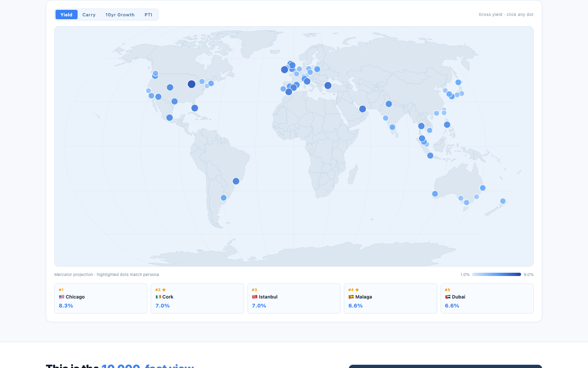
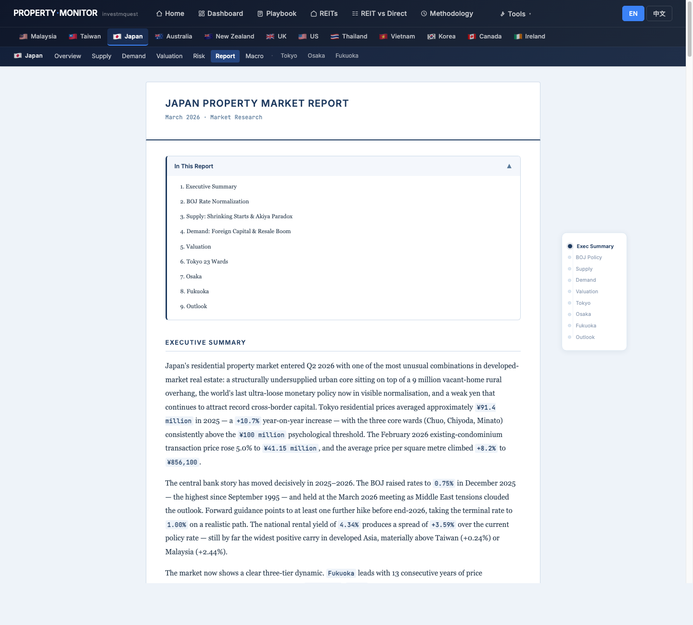
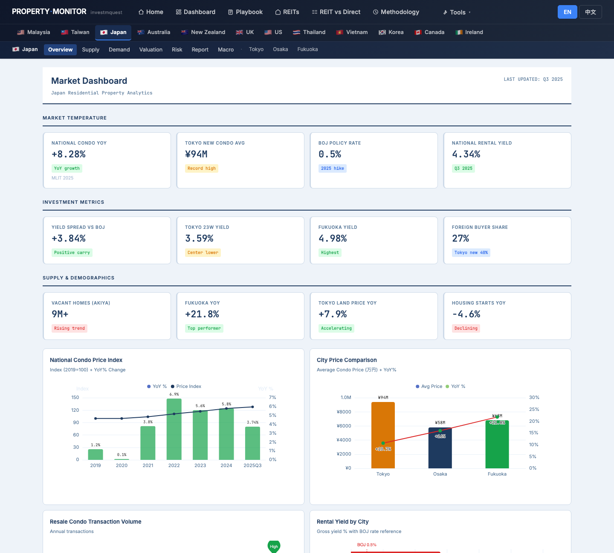
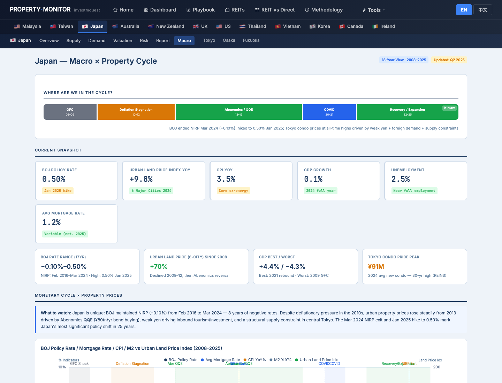
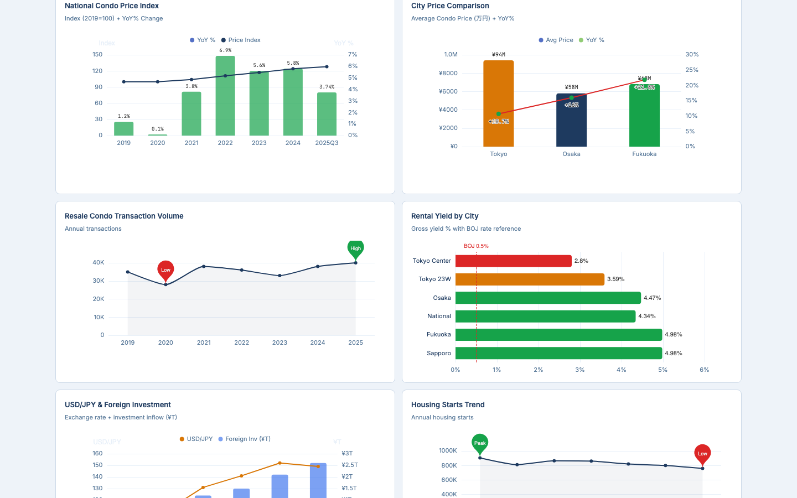
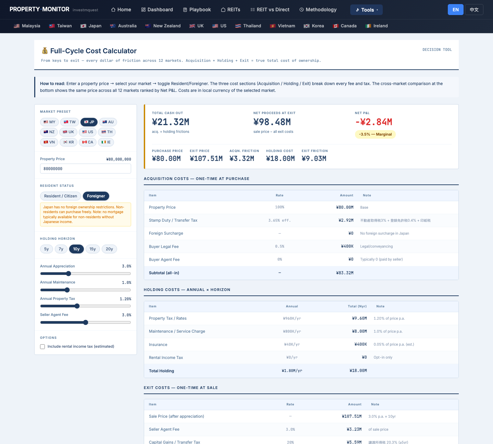
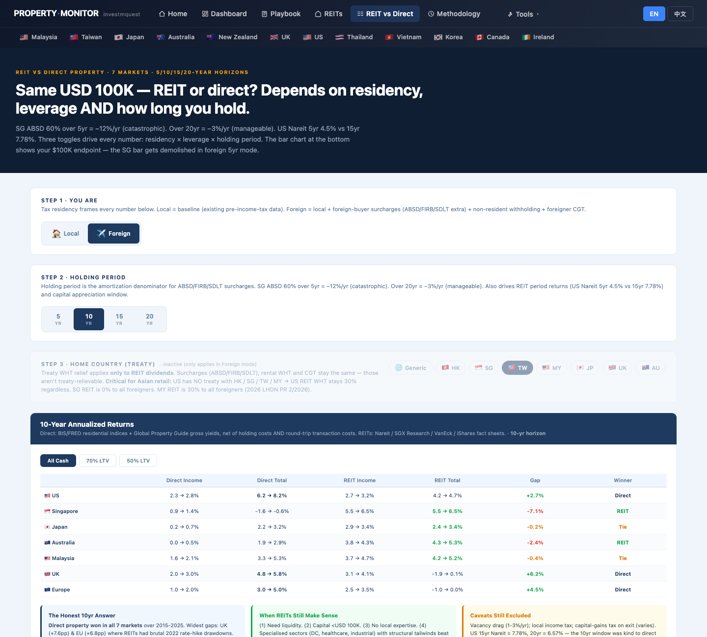

Mr. Lin (45, Taipei) just received his Japan Business Manager visa and plans to buy one Tokyo property for rental income. He has never used Property Monitor before. This walkthrough shows you which page to open first, what to click, what each chart means, and where to find each function — using Mr. Lin's questions as the lens. It is not investment advice, tax advice, or property recommendations. 林先生，45 歲，台北人，剛取得日本經營管理簽證，預計在東京買一戶收租。他從沒用過 Property Monitor。這份導覽用林先生的問題當主軸，告訴你先打開哪一頁、點哪裡、每張圖代表什麼、各種功能藏在哪。這份文件不是投資建議、稅務建議或不動產推薦。
- Where on this site does Japan data live, and how do I get there?日本的資料藏在哪？怎麼進去？
- Where can I read the analyst narrative — what's the story behind the numbers — before I start clicking charts?在開始點圖之前，哪裡能讀到分析師的敘述、看「數字背後的故事」？
- Which charts and KPIs matter for someone planning to rent out one Tokyo unit?想出租一戶東京物件，要看哪些 KPI 和圖？
- How do I decide between Tokyo / Osaka / Fukuoka — which one fits my situation?Tokyo / Osaka / Fukuoka 三選一，怎麼判斷哪個適合我？
- How do I drill from "Japan overall" down to "this specific Tokyo ward"?怎麼從「日本整體」鑽到「東京這個區」？
- What does ¥80M actually cost me end-to-end (not just the sticker price) over 10 years?¥80M 含取得、持有、退場全週期 10 年的實際總成本是多少（不只是標價）？
- Where is the tool that compares buying property vs buying J-REITs?比較「買實體 vs 買 J-REIT」的工具在哪裡？
- How do I switch the site to 中文? Where do I download a PDF?怎麼切到中文？怎麼下載 PDF？
Mr. Lin's click-by-click tour — 12 stops林先生的逐步點擊旅程 — 12 個停靠點
Each stop is a real page on the site. For each, you'll see what Mr. Lin clicks, what he sees on the screen, and how that screen relates to his situation. Follow along in another tab — every URL works. 每個停靠點都是站上的一頁實際畫面。每站告訴你林先生點什麼、螢幕出現什麼、這個畫面跟他有什麼關係。建議另開分頁跟著走 — 所有連結都能直接點。
Land on the home page and pick the right persona進入首頁，選對 persona 卡
What he sees on screen: the chosen card lights up amber with a checkmark. Below the hero, a scatter chart titled "Carry × 10-year growth, every city plotted" highlights the dots that match the yield persona — these are the cities the site thinks fit "yield-first" buyers. 螢幕出現什麼：選中的卡片變琥珀色亮起並打勾。Hero 下方的散點圖《利差 × 10 年漲幅，每城一點》會把符合「收租」persona 的點亮起 — 這些就是網站判斷適合收租買家的城市。

Use the world map to locate Japan cities用世界地圖找到日本城市
What he sees: dot color depth = how extreme the metric is for that city. Below the map, a "Top 5" strip lists the leading cities for the chosen metric, with a ★ next to ones matching his persona. 螢幕出現什麼：點的顏色深度代表該指標在該城市的極端程度。地圖下方有 Top 5 列表顯示當前指標的領先城市，符合他 persona 的旁邊有 ★。

Read the long-form market report first — get the narrative before the numbers先讀長篇市場報告 — 看完故事再看數字
What he sees: a long-form research report broken into 9 named sections — Executive Summary, BOJ Rate Normalization, Supply: Shrinking Starts and the Akiya Paradox, Demand: Foreign Capital and Resale Boom, Valuation, Tokyo 23 Wards, Osaka, Fukuoka, Outlook. This page is mostly prose: paragraphs of analyst narrative with stats embedded in the text. No charts to interpret — just read top-to-bottom (or jump via the section anchor links). 螢幕出現什麼：一份長篇研究報告，分成 9 個章節 — Executive Summary、BOJ Rate Normalization、Supply（開工萎縮與空屋悖論）、Demand（外資湧入與中古屋榮景）、Valuation（估值）、Tokyo 23 Wards、Osaka、Fukuoka、Outlook（展望）。這頁主體是敘述文字：分析師段落配內嵌統計數字。沒有圖表要解讀 — 從上往下讀就好（或用章節連結跳）。

Read the Japan dashboard — three KPI grids tell the whole market story讀日本儀表板 — 三排 KPI 把整個市場說完
What he sees: three KPI grids of 4 cards each —
螢幕出現什麼：三排 KPI、每排 4 張卡 —
① MARKET TEMPERATURE — national condo YoY, Tokyo new condo avg, BOJ rate, national rental yield (the 4 numbers everyone references first).
② INVESTMENT METRICS — yield spread vs BOJ, Tokyo 23-ward yield, Fukuoka yield, foreign buyer share. This is the row built for Mr. Lin's situation.
③ SUPPLY & DEMOGRAPHICS — vacant homes (akiya), Fukuoka YoY, Tokyo land price YoY, housing starts.
Below the KPIs, six ECharts charts cover: condo price index, city price comparison, resale volume, yield by city, USD/JPY × foreign inflow, housing starts trend.
① 市場溫度 — 全國公寓 YoY、東京新建均價、BOJ 利率、全國租金收益率（最常被引用的四個數字）。
② 投資指標 — yield spread vs BOJ、東京 23 區 yield、福岡 yield、外國買家比例。這一排就是為林先生這種情境設計的。
③ 供給與人口 — 空屋（akiya）、福岡 YoY、東京地價 YoY、住宅開工。
KPI 下方有 6 張 ECharts 圖：公寓價格指數、城市比較、二手成交量、城市 yield、USD/JPY × 外資流入、住宅開工趨勢。

Open the Macro × Cycle page to see "where in the cycle are we now"開 Macro × Cycle 頁，看「現在在週期哪個位置」
What he sees: a colored bar segmenting 2008–2025 into eras (GFC → Deflation → Abenomics → COVID → Recovery / Expansion) with a "NOW" marker pinned to the current era. Below: 6 macro KPI cards (BOJ rate, urban land YoY, CPI, GDP, unemployment, avg mortgage rate), then dual-axis line charts for monetary cycle vs property prices and real economy vs property prices, then a column of "Key Cycle Events" cards covering specific dates (e.g. NIRP exit Mar 2024, BOJ to 0.5% Jan 2025). 螢幕出現什麼：2008–2025 的彩色週期軸分為 GFC → 平成不景氣 → Abenomics → COVID → 復甦／擴張，當下時點用 「NOW」標記。下方有 6 張 macro KPI 卡（BOJ 利率、都市地價 YoY、CPI、GDP、失業率、平均房貸利率），接著兩張雙軸折線圖（貨幣週期 vs 房價、實體經濟 vs 房價），最後是《關鍵週期事件》卡片陳列具體事件日期（例如 2024/3 退出負利率、2025/1 BOJ 升至 0.5%）。

Tokyo vs Osaka vs Fukuoka — quick triage to pick the right city to drill intoTokyo vs Osaka vs Fukuoka — 快速判斷該鑽進哪一座城市
What he sees side-by-side:
三個分頁並排比較：
▸ Fukuoka — highest gross yield, fastest population inflow. But its summary cards flag a shallower tenant pool and limited foreigner-friendly ecosystem (English agents / lawyers / PMs).
▸ Osaka — mid-yield, mid-tenant-pool. Expo 2025 demand boost noted in supply page.
▸ Tokyo 23W — lower yield, but the Foreign Capital summary card explicitly notes 30%+ of central transactions >¥100M are foreign; deepest tenant pool, highest exit liquidity, mature English-speaking service ecosystem.
▸ 福岡 — 毛利最高、人口流入最快。但 summary 卡標示租客池較淺、外國人友善生態有限（英語仲介／律師／PM）。
▸ 大阪 — yield 中等、租客池中等。供給頁標示 2025 大阪世博需求提振。
▸ 東京 23 區 — yield 較低，但 Foreign Capital summary 卡明白寫著：中心區 >¥100M 成交中外資佔 30%+；租客池最深、退場流動性最高、英語服務生態成熟。

Drill into Tokyo — find the "Three Zones" cards to see what his budget can buy鑽進東京 — 找「Three Zones」卡片看他的預算落在哪一區
What he sees: three zone cards showing the price-per-sqm range for each tier — Center 5 (Minato/Chiyoda/Chuo/Shibuya/Shinjuku), Yamanote Outer (Setagaya/Meguro/Nakano), Outer Wards (Adachi/Edogawa/Katsushika). Below: a horizontal bar chart "Ward Land Price Comparison" and a "Tokyo Rent Trend" line. At the bottom, four colored summary cards (Center 5 Premium / Yamanote Value / Outer Opportunity / Foreign Capital). 螢幕出現什麼：三張 zone 卡顯示每層級的每坪價範圍 — Center 5（港／千代田／中央／渋谷／新宿）、Yamanote Outer（世田谷／目黒／中野）、Outer Wards（足立／江戶川／葛飾）。下方有橫向長條圖《區地價比較》與《東京租金趨勢》折線。最底有四張彩色 summary 卡（Center 5 溢價／Yamanote 價值／Outer 機會／外資）。

Cost Calculator — what does ¥80M actually cost over 10 years, end-to-end?Cost Calculator — ¥80M 含取得、持有、退場 10 年總成本是多少？
What he sees: a hero KPI dashboard at the top with TOTAL CASH OUT / NET PROCEEDS AT EXIT / NET P&L verdict (Net Positive / Marginal / Net Loss > 5%) plus 5 supporting stats. Below: three breakdown tables —
螢幕出現什麼：頂部 hero KPI 顯示 TOTAL CASH OUT／NET PROCEEDS AT EXIT／NET P&L 判決（淨正／邊緣／淨虧 > 5%）加 5 張輔助統計。下方三張明細表 —
① Acquisition — price, 不動産取得税, 登録免許税, 印紙税, buyer agent fee (no foreign surcharge for JP).
② Holding — 固定資産税, maintenance, insurance, optional rental income tax, with annual + total-over-horizon columns.
③ Exit — seller agent fee, 譲渡所得税 (CGT) — 39.6% if held <5yr / 20.3% if held ≥5yr.
Plus a stacked bar chart "Cost Breakdown Stack," an annual holding cost line chart, and a 12-market comparison table at the bottom (his JP row highlighted).
① Acquisition — 物件価、不動産取得税、登録免許税、印紙税、買方仲介費（JP 對外國人沒有附加稅）。
② Holding — 固定資産税、維護費、保險、可選的房租所得稅，每列含年度 + 整個持有期累計欄。
③ Exit — 賣方仲介費、譲渡所得税：持有 < 5 年 39.6%、持有 ≥ 5 年 20.3%。
另有堆疊長條圖《Cost Breakdown Stack》、年度持有成本折線圖，最底是 12 市場比較表（他的 JP 列高亮）。

Pipeline Cliff — find Tokyo on the supply risk gridPipeline Cliff — 在供給風險表格上找東京
What he sees: a quarterly delivery chart titled "Quarterly delivery as % of existing stock" showing forward supply pressure city-by-city. Each city is tagged with a colored risk badge. 螢幕出現什麼：逐季交付圖《季度交付占既有存量百分比》顯示各城市未來供給壓力。每座城市有一個彩色風險標籤。

REIT vs Direct — toggle to "Foreign + TW + 10yr" to compare his alternativesREIT vs Direct — 切到「Foreign + TW + 10 年」比較替代方案
What he sees: a 7-row comparison table for US/SG/JP/AU/MY/UK/EU markets. Columns: Direct Income / Direct Total / REIT Income / REIT Total / Gap / Winner. Below: an endpoint bar chart "$100K, after 10 years" comparing the two paths visually for each market. To the right: three context cards explaining "Foreign Mode Flips These," "Foreign-Friendly Markets," and "Treaty Relief · Taiwan." 螢幕出現什麼：美／新／日／澳／馬／英／歐 七列比較表。欄位：Direct Income／Direct Total／REIT Income／REIT Total／Gap／Winner。下方：終值長條圖《$100K, after 10 years》視覺化兩條路徑。右側三張說明卡：「Foreign 模式翻轉了什麼」「對外國買家友善的市場」「Treaty Relief · 台灣」。

Carry Heatmap — find Tokyo's row, then click for the 5-year trajectoryCarry Heatmap — 找到東京那一列，點開看 5 年走勢
What he sees: the heatmap is 41 cities × 20 quarters (5 years), cells coloured red→gray→green from −4% to +5% carry. Above, two "Top Movers" cards list TOP 5 Compressed (red) and TOP 5 Expanded (green). After clicking Tokyo, a detail panel opens with the 5-year carry line chart for that city, plus 21Q2 vs 26Q1 carry, 5yr change, current yield/rate. 螢幕出現什麼：熱力圖 41 城 × 20 季（5 年），顏色從紅 → 灰 → 綠（carry −4% 到 +5%）。上方兩張 Top Movers 卡：TOP 5 壓縮（紅）、TOP 5 擴張（綠）。點 Tokyo 後跳出 detail panel：該城市 5 年 carry 走勢線圖，加上 21Q2 vs 26Q1 carry、5 年變化、當前 yield / 利率。

Risk Monitor + Methodology — sanity check before he closes the laptopRisk Monitor + Methodology — 關電腦前的最後檢查
What he sees on Methodology: a 20-row "Primary Data Sources by Market" table. The Japan row shows: Price Index = Kantei (used) · Rent / Vacancy = At Home + Suumo · Pipeline = MLIT starts · Central Bank = BoJ. Above the table is a 10-card glossary of derived metrics (Carry Spread, PTI, P/R, Vacancy Rate, Pipeline %, 10yr Cumulative, etc.) with thresholds. Methodology 頁螢幕出現什麼：20 列《Primary Data Sources by Market》表。日本那一列：Price Index = Kantei（二手）· Rent / Vacancy = At Home + Suumo · Pipeline = MLIT 開工 · Central Bank = BoJ。表格上方是 10 張衍生指標卡（Carry Spread、PTI、P/R、Vacancy Rate、Pipeline % 等）含閾值定義。

Site cheat sheet — the 6 site-wide patterns Mr. Lin needs to know網站小抄 — 林先生要記得的 6 個全站通用規則
These work the same way on every page across all markets — learn once, use everywhere.以下規則每一頁、每個市場都一致 — 學一次，整站通用。
Language toggle語言切換
Top-right of every page: two pill buttons EN / 中文. Choice is remembered across pages and visits via localStorage.每頁右上角：兩顆膠囊鈕 EN / 中文。選擇會用 localStorage 跨頁、跨次造訪記住。
Tip: switch to 中文 first, then download PDF — the PDF will be in 中文.小技巧：先切到中文再下載 PDF，PDF 就會是中文版。
Market selector市場選擇
Navbar second row: a country flag for each market. Hover any flag to see a dropdown with Overview / Supply / Demand / Valuation / Risk / Report / Macro plus city sub-pages.Navbar 第二列：每個市場一面國旗。游標停留在任一面旗上 → 跳出下拉，包含 Overview / Supply / Demand / Valuation / Risk / Report / Macro 與各城市子頁。
Mr. Lin uses 🇯🇵 → Tokyo to jump straight to ward-level data.林先生用 🇯🇵 → Tokyo 直接跳到區級資料。
Tools dropdownTools 下拉選單
All cross-market analytical tools live here: Home, Dashboard, Playbook, REITs, REIT vs Direct, Carry Heatmap, Pipeline Cliff, Methodology, plus calculators.所有跨市場分析工具都在這裡：Home、Dashboard、Playbook、REITs、REIT vs Direct、Carry Heatmap、Pipeline Cliff、Methodology，還有各種試算工具。
If a tool isn't market-specific, it's in here.如果某個工具不是特定市場專屬的，就在這裡。
KPI card colorsKPI 卡顏色
Left border color tells you the read at a glance.左邊框顏色一眼告訴你判讀。
Chart hover tooltips圖表 hover 提示
Every ECharts chart on the site shows the data values in a popup when you hover over points/bars. Map dots and heatmap cells work the same way.站上每一張 ECharts 圖，游標停在點／長條上時都會浮出實際數值。地圖的點、熱力圖的格子也一樣。
No need to read a separate legend — hover gets you the number.不需要對照外部圖例 — hover 就有數值。
Save any page as PDF把任何頁面存成 PDF
Press ⌘ + P (Mac) or Ctrl + P (Windows) → choose "Save as PDF". The print stylesheet hides the navbar so the PDF looks clean.按 ⌘ + P（Mac）或 Ctrl + P（Windows）→ 選「另存為 PDF」。印刷樣式表會自動隱藏 navbar，PDF 版面乾淨。
This walkthrough has a dedicated "Download PDF" button at the bottom.本導覽底部有專屬「下載 PDF」按鈕。
What Mr. Lin walks away with — and what he must take outside this site林先生帶走什麼 — 以及哪些必須拿到站外去問
After the 12-stop tour, he has a clear separation between "questions the site answered" and "questions the site flagged but cannot answer."走完 12 站後，他能清楚分開「網站已回答的問題」與「網站幫他點出但不能回答的問題」。
✓ The site answered these for him✓ 網站已回答的
- Where Japan data lives and how to navigate from /home → /jp/ → /jp/tokyo日本資料在哪、怎麼從 /home → /jp/ → /jp/tokyo 一路鑽進去
- The full market narrative in plain prose before he opens any chart (the 9-section report on /jp/report)用白話文寫的完整市場敘述，在他打開任何圖之前先讀（/jp/report 的 9 章節報告）
- Which KPI grid matters most for a yield-first foreign buyer (the INVESTMENT METRICS row on /jp/)對收租外國買家最重要的 KPI 排（/jp/ 上的 INVESTMENT METRICS 那一排）
- Why Tokyo over Osaka / Fukuoka for a non-Japanese-speaking first-time landlord (the ecosystem call hidden in the city summary cards)為什麼選東京而不是大阪或福岡（城市 summary 卡裡藏的生態判斷）
- What budget tier his ¥80M lands in (Tokyo Three Zones cards)¥80M 落在東京哪個層級（Tokyo Three Zones 卡）
- What ¥80M actually costs over 10 years end-to-end with JP tax brackets baked in (Cost Calculator)¥80M 在 10 年週期內的真實總成本，JP 稅率已內建公式（Cost Calculator）
- Whether Tokyo supply is in DANGER / WATCH / EASING for his entry timing (Pipeline Cliff)東京供給目前是 DANGER / WATCH / EASING 哪個桶（Pipeline Cliff）
- How J-REIT compares as alternative with his exact residency + horizon (REIT vs Direct toggles)用他的居民身分 + 持有期，J-REIT 替代方案的對照結果（REIT vs Direct toggles）
- Direction of Tokyo's carry over 5 years (Carry Heatmap row + detail panel)東京 carry 過去 5 年方向（Carry Heatmap 列 + detail panel）
- What policy & macro risks are on watch (Risk page radar + timeline)正在觀察哪些政策與宏觀風險（Risk 頁 radar + 時間軸）
- Where every number comes from (Methodology page Japan row)每個數字的來源（Methodology 頁日本那一列）
→ Questions for advisors outside this site→ 必須拿到站外問專業人士的
- Personal tax position in Japan and Taiwan, foreign tax credit, and inheritance exposure → 稅理士 (zeirishi) in Japan + 會計師 in Taiwan個人在日本與台灣的稅務、扣抵安排、相續稅曝險 → 日本稅理士 + 台灣會計師
- Business Manager visa renewal requirements (visa is independent of property purchase) → 行政書士 (gyoseishoshi)經營管理簽證更新條件（簽證獨立於買房） → 行政書士
- Mortgage eligibility as non-resident with BM visa → SMBC, SBJ Bank, Tokyo Star, ARUHI loan officers非居住者 + 經管簽的房貸合格條件 → SMBC、SBJ、東京スター、ARUHI 房貸專員
- Specific unit due diligence: 新耐震 vs 旧耐震, 所有権 vs 借地権, HOA financials, reserve fund history → local 仲介 + 司法書士單一物件 DD：新耐震 vs 旧耐震、所有権 vs 借地権、管理組合財報、修繕積立金歷史 → 當地仲介 + 司法書士
- Property management contract and tenant placement strategy → English-capable PM company in Tokyo物件管理合約與招租策略 → 在東京有英文窗口的 PM 公司
- FX hedging on the JPY-TWD entry and exit → his bank's FX deskJPY-TWD 進出場避險 → 他往來銀行的 FX 部門
The site's best-supported call for Mr. Lin站上資料能支持的最佳選項 — 給林先生
Not a personalized recommendation — a single, opinionated call assembled only from data this site already shows in SECTIONS 01–04.非個人化推薦 — 是從 SECTION 01–04 站上資料推導出的單一明確建議。
✓ Pre-commit checklist (from site data)✓ 進場前 checklist（站上資料能驗證的）
- INVESTMENT METRICS row on
/jp/— confirm cap rate, vacancy, gross-to-net delta still match east-tier assumptions on the day of offer./jp/上 INVESTMENT METRICS 排 — 確認 cap rate、空置率、毛淨差在出價當天仍符合東城收租帶假設。 - Pipeline Cliff status for Tokyo must read EASING or WATCH (not DANGER) — re-check the week of offer.Tokyo 的 Pipeline Cliff 狀態必須是 EASING 或 WATCH（不是 DANGER） — 出價週重新確認。
- Cost Calculator 10-year total cost (JP tax baked in) must clear the post-tax yield hurdle Mr. Lin set after the 9-section report on
/jp/report.Cost Calculator 10 年總成本（JP 稅內建）必須通過林先生讀完/jp/report9 章節後設的稅後 yield 門檻。 - REIT vs Direct toggle on the unit's expected cap rate — direct must still beat J-REIT by ≥ the gap he flagged as worth the operational cost.用該物件預期 cap rate 跑 REIT vs Direct toggle — 直接持有勝出 J-REIT 的幅度必須 ≥ 他認為值得「自管成本」的差距。
- Carry Heatmap direction for Tokyo — 5-year trend not flat or declining; rolling carry still positive.Tokyo Carry Heatmap 5 年方向 — 不能持平或下行，rolling carry 仍為正。
- Methodology page Japan row — every figure used in the offer letter is sourced from BOJ / MLIT / 統計局, not crowdsourced.Methodology 頁日本那一列 — 出價文件中每個數字都來自 BOJ / MLIT / 統計局，非眾包資料。
→ Off-site next steps (the site cannot answer)→ 走出站外的下一步（站上無法回答的）
- 稅理士 (zeirishi) in Japan + 會計師 in Taiwan — joint tax position, foreign tax credit, inheritance exposure for a TW-resident JP-asset holder.日本稅理士 + 台灣會計師 — 台灣居民持有日本資產的稅務、扣抵與相續曝險聯合規劃。
- 行政書士 (gyoseishoshi) — model BM visa renewal scenarios; property purchase ≠ visa right, so renewal failure ≠ forced sale but property → tax resident status interaction matters.行政書士 — 模擬 BM 簽證續簽情境；買房 ≠ 簽證權利，續簽失敗不會強制賣，但「持有房 → 稅務居民」的互動要先模擬。
- SMBC / SBJ Bank / Tokyo Star / ARUHI loan officers — non-resident mortgage with BM visa typically 50–70% LTV, rate 2.0–3.5%; lock terms before bidding.SMBC / SBJ / 東京スター / ARUHI 房貸專員 — 非居住者 + BM 簽證的房貸條件一般 LTV 50-70%、利率 2.0-3.5%；出價前先 lock。
- Local 仲介 + 司法書士 — single-unit due diligence: 新耐震 vs 旧耐震 confirmation, 所有権 vs 借地権 land title, HOA financials, reserve fund (修繕積立金) history.當地仲介 + 司法書士 — 單一物件 DD：新耐震 vs 旧耐震、所有権 vs 借地権、管理組合財報、修繕積立金歷史。
- English-capable PM company + bank FX desk — property management contract, tenant placement strategy, and JPY–TWD entry / exit hedging plan.英文窗口 PM 公司 + 銀行 FX 部門 — 物件管理合約、招租策略、JPY-TWD 進出場避險方案。
A second-hand 1-bed in Tokyo's east-zone yield tier is the single call most consistent with the 12 stops Mr. Lin walked through. The site cannot solve BM-visa renewal risk, FX risk, or single-unit due diligence — those decide whether this call survives implementation.東京城東收租帶的二手單臥小宅是 12 站走完後最一致的選項。但 BM 簽證續簽、FX 風險、單一物件 DD — 都不是站上能解決的，那些才決定這個選項能不能真的執行。